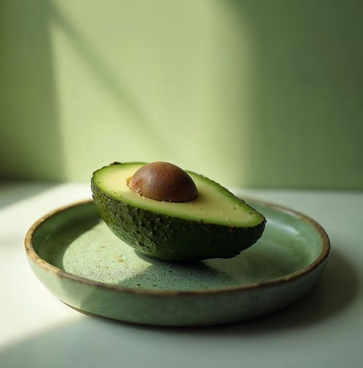
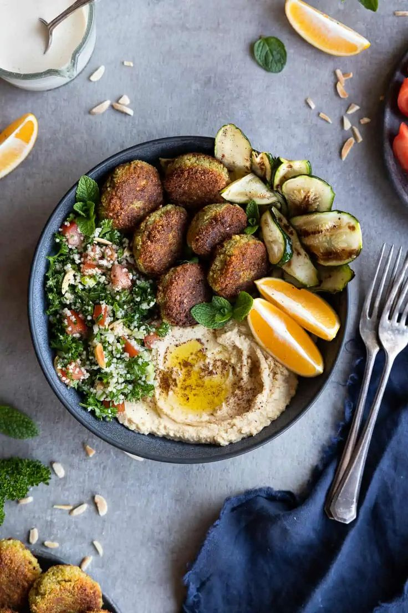
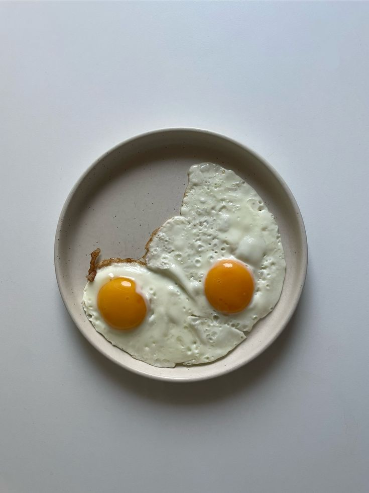
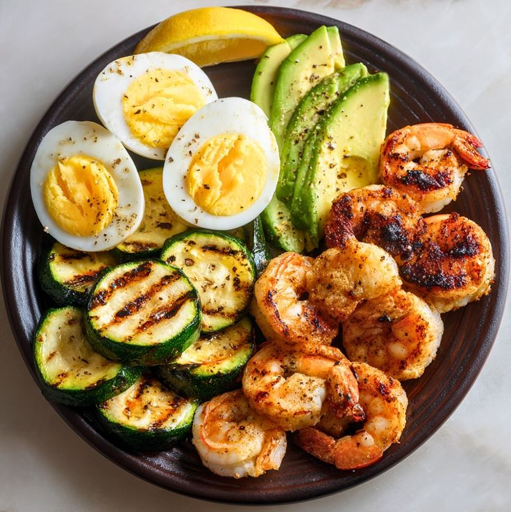
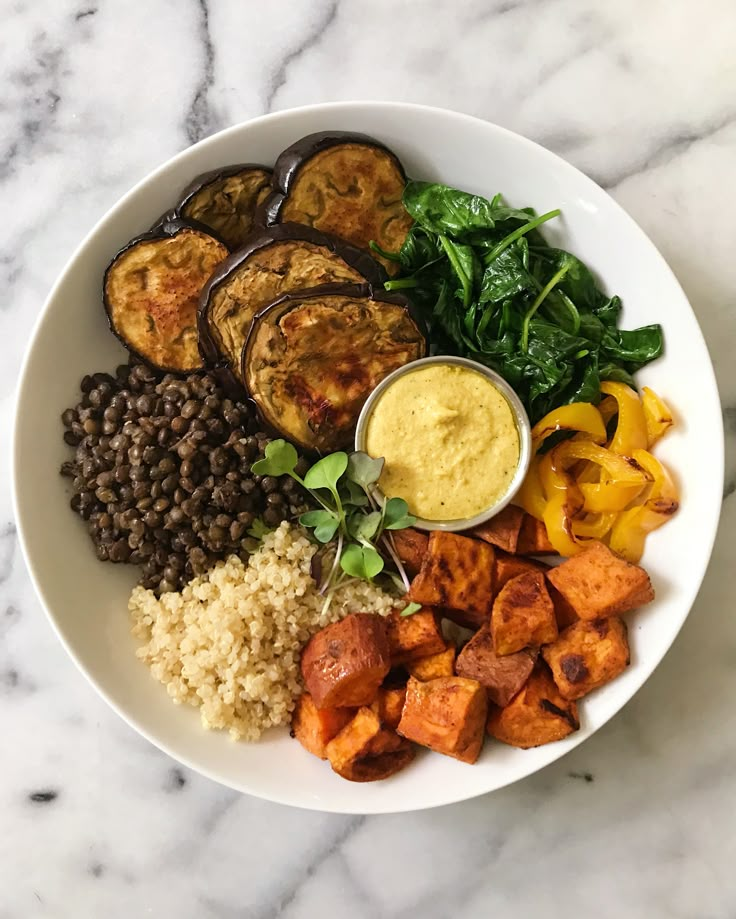

Nutrition Study on Avocado
Avocados are rich in healthy fats and support heart health...

Study on Mediterranean Diet
The Mediterranean diet is linked to reduced heart disease risk...

High-Protein Diet & Weight Loss
High-protein diets are known to increase satiety and metabolism...

Keto Diet and Brain Health
Exploring how a ketogenic diet may enhance cognitive function and focus...

Plant-Based Proteins Study
Investigating the benefits of plant-based proteins on muscle growth and recovery...

Low-Carb Diet & Blood Sugar
A study on how low-carb diets can stabilize blood sugar and improve insulin sensitivity...